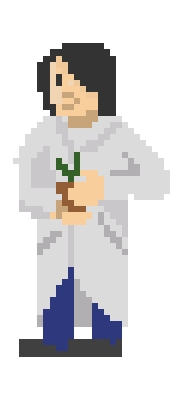
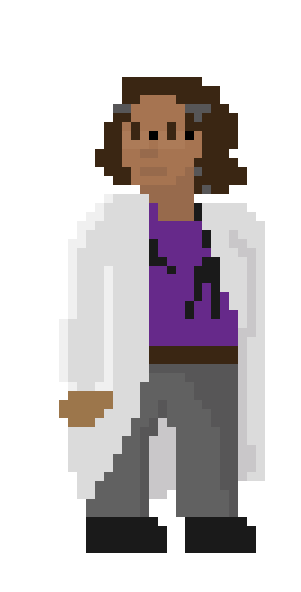
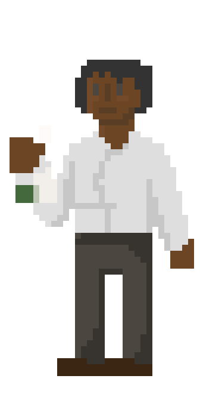

The Crew
FREE’s crew are the highest qualified individuals that reside at Valhalla Space Group. These individuals had to go through a rigors selection and training proses. Starting form hun dreds of candidates to the six you see here.
FREE is a twenty-year mission and no single crew member may stay for more then three years on the planet. As to curb mental and physical health conditions associated with long times away from the home base. Though they may return after two years off of the planet and they still are canadines and successfully Nótt the selection and training again.
One does not just need academics to enter the FREE program. As the crew is so small secondary skills are key, along with physical aptitude and one has to get along with the other crew members as well. Once you’re on the planet the earliest you can get off is a year later so you better get along with your bunk buddies.
If you're interested in the lifestyle of our crew members check out the about us tab!
DR. Wyetta Jemison PHD
Ecologist, chief science officer
Wyetta Jemison attended Grand Mountain University in 125 PCE and received her PhD in 130 at Tyr University. Wyetta is the youngest chief science officer ever on the Free mission. She says that her favorite ice-cream flavor is mintchip or cookie dough.
Dr. Mingmei Ling PhD.

Ethologist, head of human habitat coordination
Mingmei Ling attended the Lincoln Institute, she is the head of the human habitat division and helped develop the Yggdrasil living compound. She is in charge of all of the day-to-day management of crew’s living space. She is also an Ethologist receiving her PhD in 124 PCE her insight into animal behavior has been ground breaking on the FREE mission.
Dr. Lori Jonson

Geneticist, mechanic, vehicle and lamellar suit expert
Dr. Lori Jonson is the crew member who has the most planet-side time at this time. They have spent three three-year cycles including the first landing. The Loricant are named after Lori as she was the first to touch foot on the planet and it was decided that they were allowed to name one animal after themself. Lori attended Grand Mountain University and received their phd at Grand Mountain University as well as a minor in engineering.
Dr. Diana Jackson MD.

Medical doctor, Human resource and
psychiatric resource
Dr. Jackson received her MD at the Wildwood Medical University in 115. She is the medical doctor in the current crew and is on her second round of attending the FREE mission. Dr. Jackson specialized in emergency care but has learned so much since her first trip onto Nótt that she says that she “can do just about any medical procedure” and we’re included to believe her.
Dr. Geetika Ride PhD.

Cytologist, pharmaceutical expert and exportation head.
Dr. Geetika specializes in studying the cells of Nótt, and theorizing how some of these may be used for medicine back home. Others I her position have already made great strives for medicine back at home and we are hoping this new member will do the same. Dr. Ride went to Wildwood University and received her PhD at Gaia State University. She works with us here at Valhalla to change lives.
Dr. Katina Tereshkova

Biologist, impact minimization expert
Dr. Katina Tereshkova I her roll at FREE, specializes in minimalizing the scientist’s impact on the new planet. Any tests or research needs to go through Dr. Tereshkova to make sure that any and all tests are as least invasive as possible and causes as little harm to the Nótt and its biosphere as possible. Dr. Tereshkova recever her PhD in 119 at Grand Mountain University